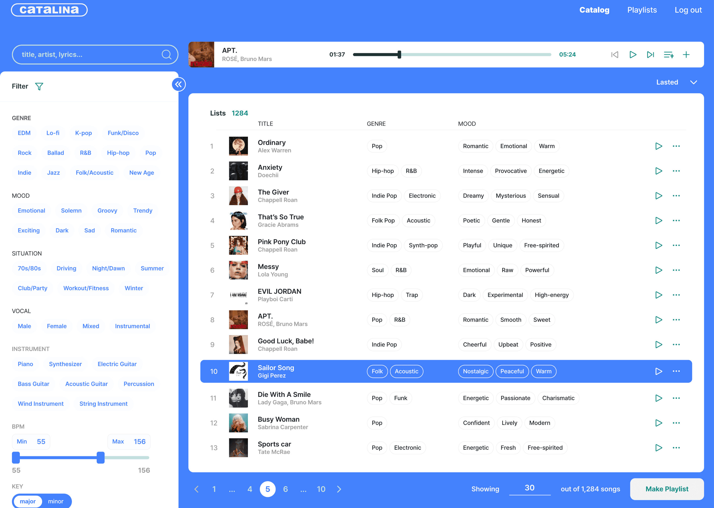
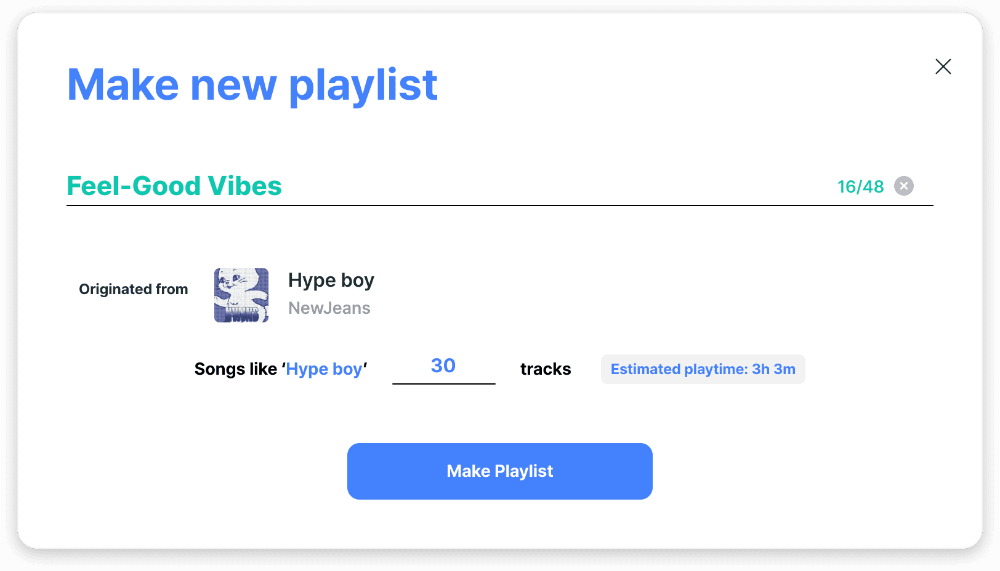
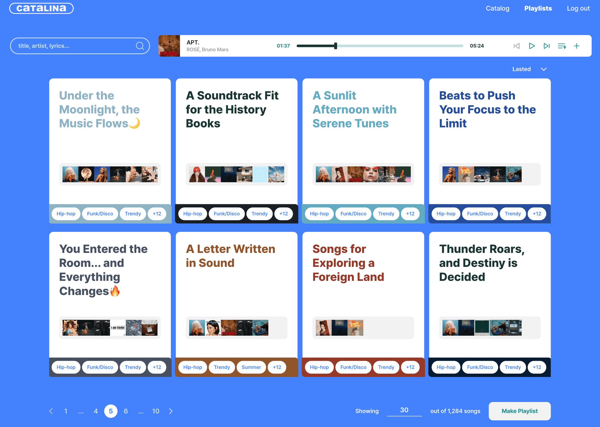

음원 카탈로그와 AI 분석 기술을 플레이리스트 제품으로.
Catalina는 음원 카탈로그를 보유한 기업과 함께 만든 AI 플레이리스트 PoC야. 장르·무드·BPM 조건이나 기준 곡을 바탕으로 음악을 탐색하고 플레이리스트를 생성하는 경험을 설계했어.
음원을 활용할 사업 가능성을 탐색하는 동안 AI 연구와 제품 개발이 함께 진행됐어. 나는 유일한 디자이너로 연구·개발팀과 협업해 모델 출력을 검색·곡 선택·생성 흐름으로 구체화했어.
연구가 진행되는 동안 제품 경험도 설계해야 했어.
기존 AI 기술을 음악을 고르는 경험으로 구체화하는 역할이었어.
음원 카탈로그를 보유한 기업과 협업해, 상황과 분위기에 맞는 플레이리스트 제품을 개발했어.
나는 유일한 디자이너로 참여해, 연구·개발팀과 모델 출력과 구현 가능성을 확인하며 인터페이스를 설계했어.
프로젝트의 역할과 범위
연구팀이 AI 모델을 담당했어. 내 기여는 모델 연구 자체가 아니라 분석·추천 결과를 사용자가 읽고 조작하는 제품 경험으로 옮기는 것이었어.
사용자는 어떻게 플레이리스트를 만들까?
시작 방식은 두 가지였어. 장르·무드·BPM 등의 조건으로 곡을 찾거나, 기준 곡과 비슷한 음악을 찾는 방식이야.
조건 또는 기준 곡 선택 → 추천곡 확인 → 플레이리스트 생성·저장으로 이어졌어. 이 흐름에서 다음으로 풀어야 할 문제는 “추천된 곡을 무엇을 보고 고를까?”였어.
곡 이름만으로는 분위기를 판단하기 어려울 수 있었어.
제목만 보여줄지, 분석 정보까지 보여줄지 판단이 필요했어.
사용자가 키워드나 무드를 고르면 AI가 관련 곡을 추천했어. 곡 제목과 아티스트 외에 추천곡의 성격을 읽을 단서가 필요하다고 봤어.
하지만 원시 분석 수치를 모두 노출하면 해석할 정보도 늘어나. 선택에 필요한 정보를 남기는 방향을 택했어.
관찰과 가설의 구분
이 설명은 설계 판단의 근거야. 제목만 있는 화면과 무드 정보가 있는 화면을 비교해 사용자 이해도를 검증한 자료는 현재 없어.

연관성이 높은 무드 3개만 보여줬어.
원시 수치 대신, 곡의 특징을 읽을 수 있는 단어를 배치했어.
Romantic(로맨틱한), Spring(봄 느낌의), Soft(부드러운)처럼 익숙한 무드 단어를 칩으로 표현했어.
제한된 화면에서 곡을 비교하도록, 연관성이 높은 상위 3개만 노출했어. 원시 수치도 익숙한 점수 체계로 표현하는 방향을 선택했지.
왜 3개인가? 확인된 범위
상위 3개는 당시의 노출 범위 결정이야. 2개·3개·5개를 비교해 최적값을 검증한 것은 아니야. 정확한 점수 변환 규칙도 추가 확인이 필요해.
무드별 연관성 데이터
연관성에 따라 정렬
선택에 필요한 단서
상위 3개 무드 노출
진행률을 알 수 없어, 단계 표시를 없앴어.
기술적으로 확인할 수 있는 상태만 사용자에게 전달했어.
단계별 진행 표시를 고려했지만, 개발팀에 확인하니 백엔드 처리 단계를 추적할 수 없었어.
그래서 진행률 대신 처리 중임을 알리는 반복 애니메이션을 선택했어. Lottie(벡터 애니메이션 형식)로 제작했지.
이 선택에서 달라진 점
얼마나 진행됐는지는 알려주지 못하지만, 시스템이 처리 중이라는 상태는 전달할 수 있어. 아래 애니메이션은 그 원리를 재현한 것으로, 당시 제작 파일은 아니야.
단계별 추적이 가능해야 하는 표현
처리 중 · 진행률을 약속하지 않는 피드백
무드 정보와 로딩을 하나의 경험으로 묶었어.
곡 탐색부터 플레이리스트 생성·관리까지 하나의 흐름으로 설계했어.
검색과 필터로 곡을 찾고, 곡 정보를 살펴본 뒤 생성 모달에서 기준 곡과 곡 수를 지정할 수 있었어. 저장한 결과는 플레이리스트 페이지에서 다시 찾아 들을 수 있도록 했지.
아래는 기존 포트폴리오에 수록했던 제품 화면이야. 무드 상위 3개 규칙과 로딩 애니메이션의 상세 구현은 앞의 설명도와 구분해서 봐줘.



POC·MVP에 참여했어. 사용자 효과는 미검증이야.
확인된 기여는 AI 출력을 제품 인터페이스로 구체화한 경험이야.
POC(개념 검증)와 MVP(최소 기능 제품) 개발에 참여하며 정보 선별과 처리 중 피드백을 설계했어.
사용자 만족도·추천 신뢰도 향상이나 무드 3개의 효과를 입증할 검증 자료는 현재 없어.
결과를 해석하는 범위
제품 경험을 구현한 사실과 그 경험이 사용자에게 더 효과적이었다는 주장은 달라. 후자는 별도의 사용성 검증이 필요해.